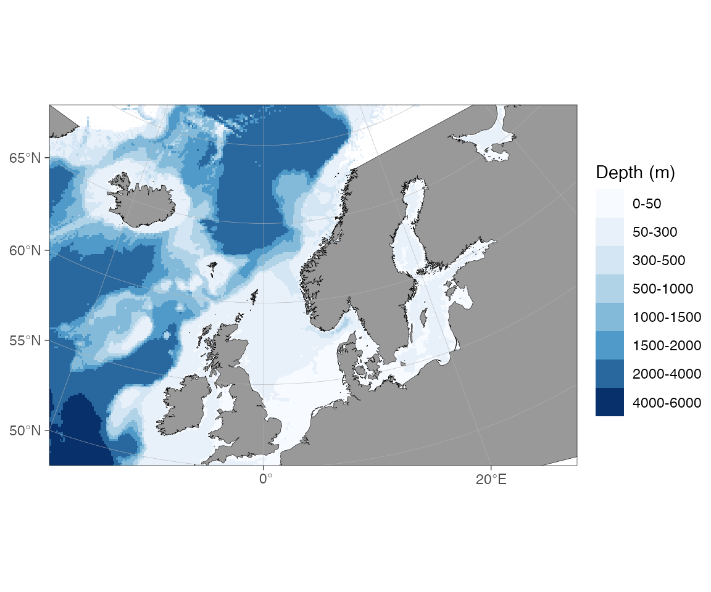
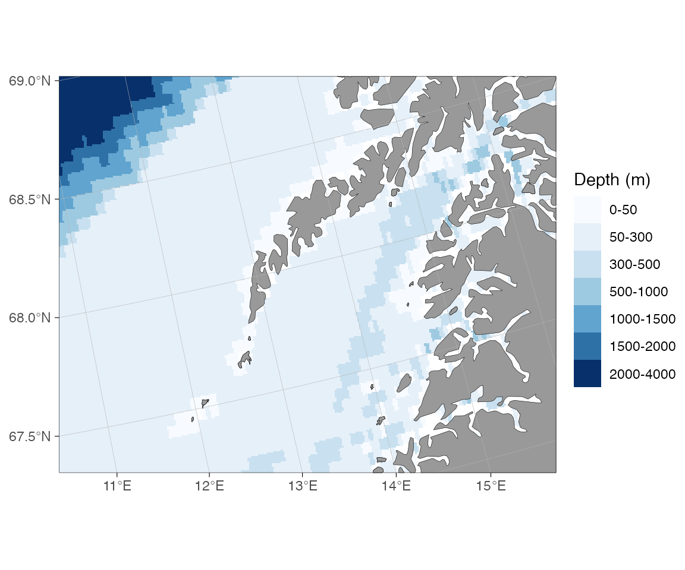
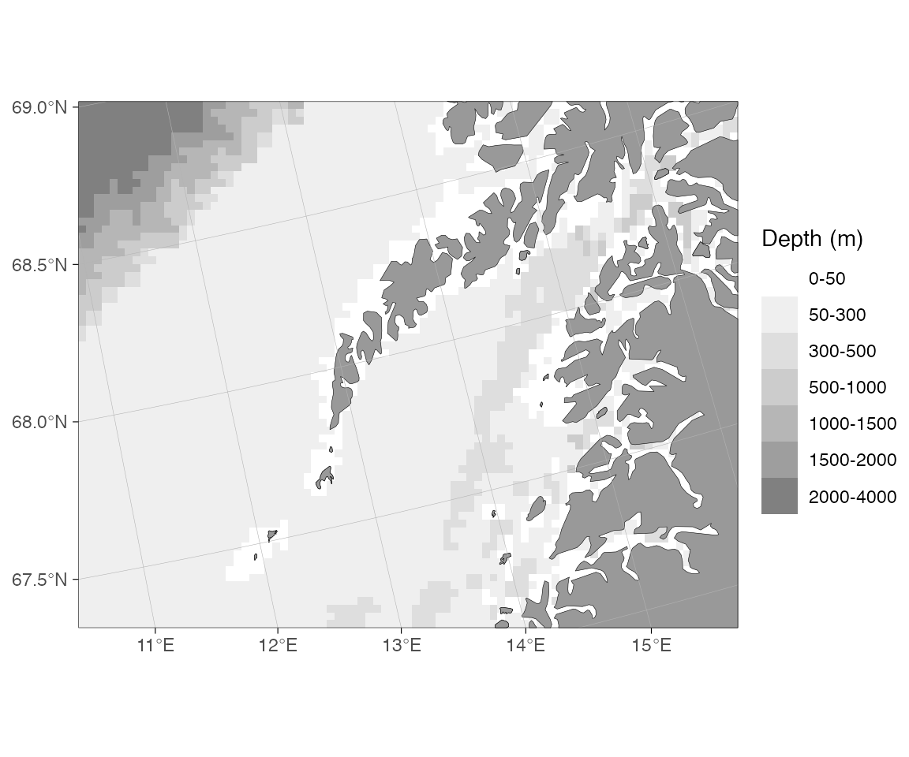

Bathymetry in ggOceanMaps
Mikko Vihtakari (Institute of Marine Research)
19 June, 2026
Source:vignettes/bathymetry.Rmd
bathymetry.RmdggOceanMaps plots bathymetry from five kinds of data source. They
differ mainly in resolution and in how much setup they require: the
shipped raster works offline with no preparation, while the
higher-resolution options need either an internet connection or a
one-time download. This vignette describes each source and shows the
bathy.style argument that selects it.
The examples that download or fetch data are not evaluated when the vignette is built; the figures shown for them were rendered beforehand.
Quick decision guide
| Need | Source | bathy.style |
|---|---|---|
| Works offline, no setup (default) | Shipped low-resolution raster | "rbb" |
| Higher detail, global and polar maps | ggOceanMapsLargeData continuous raster | "rcb" |
| Filled depth-band contours | ggOceanMapsLargeData polygon contours | "pb" |
| Contour lines only | ggOceanMapsLargeData contour lines | "cb" |
| Anywhere on the globe, ~1.85 km | ETOPO1 Web Coverage Service (live) | "wceb" |
| European waters, ~115 m | EMODnet Web Coverage Service (live) | "wemb" |
| Your own GEBCO / ETOPO / IBCAO file | Local raster via userpath
|
"rub" |
| Custom contour polygons or land |
raster_bathymetry() + vector_bathymetry()
/ vector_land()
|
shapefiles = list(...) |
Substitute g for the final b in any
abbreviation to get the greyscale variant (rbb →
rbg, wemb → wemg, and so on). The
full alias list is in ?basemap.
1. Shipped low-resolution raster (no setup)
The package bundles a coarse global bathymetry raster,
dd_rbathy, which is always available and needs no download.
It is downsampled from the ETOPO 2022 15 arc-second global relief model
(NOAA National Centers for Environmental Information, https://doi.org/10.25921/fd45-gt74) and binned into
depth bands. This is the default source, so it is enough to set
bathymetry = TRUE:

The style can also be set explicitly with
bathy.style = "rbb" (raster, binned, blues):

The greyscale variant is "rbg":

The shipped raster is kept coarse to keep the package within CRAN’s size limit. It is well suited to overview maps and exploratory plots; for publication maps one of the higher-resolution sources below is usually preferable.
2. ggOceanMapsLargeData (one-time download per region)
The companion repository ggOceanMapsLargeData
hosts higher-resolution data for the supported regions (Decimal Degree,
Arctic Stereographic, Antarctic Stereographic, and several pre-made
regional shapefile sets). It provides three styles: a continuous raster,
filled polygon contours, and contour lines. basemap()
downloads what it needs on first use and caches it locally.
One-time setup. Choose a permanent directory so the
files persist between R sessions, and add this line to
~/.Rprofile:
options(ggOceanMaps.datapath = "~/ggOceanMaps_data")On the first call for a region a prompt asks you to confirm the download (roughly 15–100 MB depending on the region). Subsequent calls read from the cache and are immediate.
Continuous raster (rcb)
The recommended high-resolution source for most maps.
downsample = n reduces the rendering cost at the expense of
detail.
basemap(c(11, 16, 67.3, 68.6), bathy.style = "rcb")
basemap(c(11, 16, 67.3, 68.6), bathy.style = "rcb", downsample = 10)
basemap(c(11, 16, 67.3, 68.6), bathy.style = "rcg") # greyscale
rcb)
off Lofoten, northern Norway.

3. Live download from a Web Coverage Service (WCS)
For one-off maps, or workflows where you would rather not manage
local files, ggOceanMaps can fetch bathymetry on demand from two OGC Web
Coverage Services. No pre-download is required; fetched tiles are cached
under getOption("ggOceanMaps.datapath"), so repeated calls
for the same bounding box are immediate.
| Source | Style | Coverage | Resolution |
|---|---|---|---|
| ETOPO1 (NOAA NCEI) |
wcs_etopo_blues (wceb) |
Global | ~1.85 km |
| EMODnet |
wcs_emodnet_blues (wemb) |
European waters | ~115 m |

wceb)
around the Hawaiian Islands.
# North Sea — high-resolution European waters from EMODnet
basemap(c(2, 3, 54, 55), bathy.style = "wemb")
wemb) in the North Sea.If you request EMODnet for an area outside its European coverage, the error message points you to ETOPO:
basemap(c(110, 120, -20, 30), bathy.style = "wemb")
#> Error: Bounding box (110.0° to 120.0° lon, -20.0° to 30.0° lat) lies
#> entirely outside the approximate coverage of EMODnet (≈-36° to 43° lon,
#> 15° to 90° lat).
#> For global bathymetry coverage, download GEBCO or ETOPO data locally and
#> use raster_bathymetry() + vector_bathymetry() instead, or wait for a
#> global WCS source to be added to ggOceanMaps.Replacing wemb with wceb makes the same
call work.
Manual fetch with wcs_bathymetry()
The bathy.style route is the simplest option, but for
full control — passing the raster into vector_bathymetry(),
combining regions, or sharing a cache with other tools — call
wcs_bathymetry() directly:
bathy <- wcs_bathymetry(c(2, 3, 54, 55), source = "emodnet")
basemap(c(2, 3, 54, 55),
shapefiles = list(land = dd_land, glacier = NULL,
bathy = bathy$raster),
bathymetry = TRUE)WCS caveats
- Decimal-degree limits only. Polar maps and projected-CRS limits are not yet supported.
-
Per-source size caps. EMODnet defaults to a 50 deg²
maximum bounding box (it reads 8-byte doubles internally, and a 4° tile
already exceeds its read cap); ETOPO defaults to 2000 deg² because the
underlying grid is much coarser. Override either with
max_area_deg2 = ...inwcs_bathymetry(). Larger boxes are tiled and mosaicked automatically.
4. Your own raster (GEBCO, ETOPO, IBCAO, …)
When you need a specific dataset — the latest GEBCO grid, an ETOPO
2022 variant, a regional IBCAO compilation, or a file processed by your
own group — download it once, point ggOceanMaps at it through
ggOceanMaps.userpath, and use the rub /
rug styles:
# Set once (in .Rprofile for persistence):
options(ggOceanMaps.userpath = "path/to/your/bathymetry.nc")
# Then any basemap call uses your file:
basemap(c(11, 16, 67.3, 68.6), bathy.style = "rub")
basemap(c(11, 16, 67.3, 68.6), bathy.style = "rub", downsample = 10)
basemap(c(11, 16, 67.3, 68.6), bathy.style = "rug") # greyscale
rub)
off Lofoten.Any format that stars::read_stars() can open is accepted
(NetCDF .nc, GeoTIFF .tif, GMT
.grd, and so on). The file is read in full on every call,
so the user-raster route can be slower than a pre-processed
ggOceanMapsLargeData object for the same region. Use
downsample to trade resolution for speed.
ggOceanMaps.userpath is also used by
get_depth() to look up point depths from your raster:
dt <- data.frame(lon = seq(-20, 80, length.out = 41), lat = 50:90)
dt <- get_depth(dt, bathy.style = "ru")
qmap(dt, color = depth) + scale_color_viridis_c()5. Build your own shapefiles
When you need contour polygons, custom depth bins, or a matched land
+ bathymetry pair, the raster_bathymetry() /
vector_bathymetry() / vector_land() pipeline
turns any raster source into reusable shapefile objects:
# 1. Process the raster — crop, sign-flip, optionally bin into contours
rb <- raster_bathymetry(
"path/to/your/bathymetry.nc",
depths = c(50, 200, 500, 1000, 2000, 4000), # depth break points
boundary = c(-5, 10, 50, 60) # crop to your region
)
# 2a. Vectorize bathymetry into depth-band polygons
vb <- vector_bathymetry(rb, drop.crumbs = 10) # drop islands < 10 km²
# 2b. Vectorize land from the same raster
vl <- vector_land(rb, drop.crumbs = 10)
# 3. Plot — both layers plug into basemap()
basemap(c(-5, 10, 50, 60),
shapefiles = list(land = vl, glacier = NULL, bathy = vb),
bathymetry = TRUE)Setting depths = NULL skips the binning step and returns
a continuous raster — useful for geom_raster-style fills
without the vectorization overhead.
Save the processed objects so the processing cost is paid only once:
save(vb, vl, file = "my_region_bathy.rda")Mixing styles across a multi-panel figure
bathy.style is set per call, so each panel of a
multi-panel figure can use its own source:
Citing the data sources
The bathymetry data are not the property of ggOceanMaps or the Institute of Marine Research. Cite the source of any bathymetry you publish:
-
Shipped raster (
rbb) and ggOceanMapsLargeData rasters / contours (rcb,pb,cb) derive from the ETOPO 2022 15 arc-second global relief model (NOAA National Centers for Environmental Information, https://doi.org/10.25921/fd45-gt74). -
ETOPO1 Web Coverage Service (
wceb) is Amante & Eakins 2009, NOAA NGDC (https://www.ncei.noaa.gov/products/etopo-global-relief-model). -
EMODnet Web Coverage Service (
wemb) is distributed under CC-BY (https://emodnet.ec.europa.eu/en/bathymetry). -
User raster (
rub) — cite whatever dataset you supplied (GEBCO, ETOPO, IBCAO, …).
The land and glacier polygons, and the regional pre-made shapefiles, have their own sources. See the Citations and data sources section of the README for the full list.
See also
-
?basemapfor the fullbathy.stylereference table. -
?wcs_bathymetryfor the live download function. -
?raster_bathymetry,?vector_bathymetry,?vector_landfor the build-your-own pipeline. -
vignette("cookbook")for short, copy-pasteable recipes. - The user manual:
vignette("ggOceanMaps").